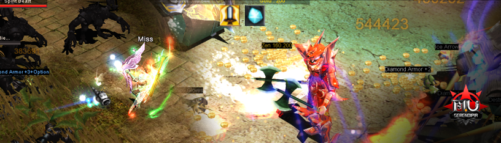
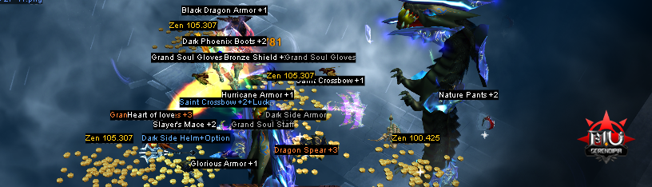
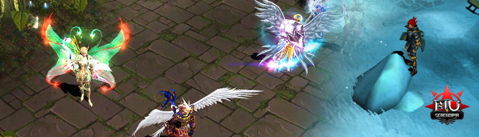
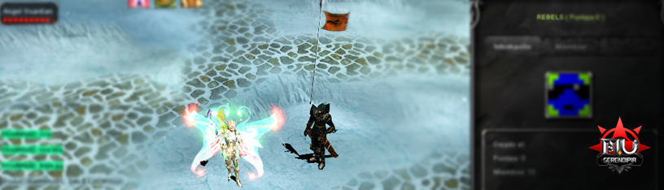

JUGAR Y AVANZAR
Nivelación
Derrota enemigos para ganar experiencia, subir de nivel y evolucionar.
Mejorar Equipamiento
Recoge objetos de los enemigos derrotados o comercia con otros jugadores para mejorar tus armas y armaduras.
Exploración
Explora el mundo de Mu Serendipia, que generalmente está dividido en diferentes mapas con diferentes monstruos y desafíos.
Guild
Únete a un Guild para participar en actividades grupales, como guerras de clanes y eventos especiales.
Consejos Adicionales
Socialización
Mu Online es un juego social. Interactúa con otros jugadores, únete a clanes, y participa en la comunidad de discord para mejorar tu experiencia.
Economía del Juego
Aprende sobre la economía interna del juego, cómo comerciar con otros jugadores y qué elementos son más valiosos.